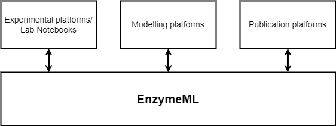

Methodology
Methodology¶
The EnzymeML format and toolbox
EnzymeML is a machine-readable data exchange format to document enzymatic data, based on the Systems Biology Markup Language (SBML) [HFS+03], in compliance with the STRENDA guidelines [TAB+14]. It aims to store all relevant metadata of an experiment, information on the involved enzymes together with measured results such as time-course data of substrate and product concentration [Ple21], thus enabling the seamless exchange of data between experimentalists, modellers and databases as shown below.

Fig. 1: Schematic representation of the EnzymeML data format as a link between experimental platforms, modelling platforms and publication platforms.
EnzymeML is not meant to be read by humans but comes with a toolbox. One crucial software is PyEnzyme [RBS21], a Python package to read, write and edit EnzymeML. PyEnzyme can easily be integrated into every Python program and used inside a Jupyter Notebook. In addition, EnzymeML provides an application programming interface (API) with a RESTful interface, offering the same functions as PyEnzyme.
Jupyter Notebooks
Jupyter Notebook is an application to develop code in a low-entrance level environment. It was first introduced by the project Jupyter in 2015. In contrast to other development environments, a Jupyter Notebook is structured into various kinds of cells. Aside from the code cells containing the executable code, it offers markdown cells for descriptive text, equations, and images. This structure makes it possible for non-programmers to follow the code. In addition, Jupyter notebook unfolds its full strength in the ecosystem of sharing platforms such as GitHub, Binder[JBF+18], Notebook Viewer, and Google Colaboratory [Bis19], where developers can share their files for others to use. Furthermore, Colab and Binder lower entry barriers by providing cloud servers to run notebook files online without installing anything on a local machine. Thus, everyone with the link to a notebook file can run it and generate desired output without any prior programming experience. Links to Binder are also incorporated into the website version of this Jupyter Book.
Implementation
Jupyter Notebooks can run various programming languages, but the most common is Python, which is well established in the research community and comes with many packages for data transformation, visualisation and computation. All scenarios in this work are programmed in Python and use PyEnzyme. Data transformations are done with NumPy [HMvdW+20] and pandas [WesMcKinney10], which offer data structures for easy visualisation and calculation. The visualisations are plotted with Matplotlib [Hun07], and tables are rendered from pandas data frames. Finally, the analysis with parameter estimation is done with SciPy [VGO+20] and lmfit [NON+21], which offer many statistical functions, such as linear regression and minimisation methods.
Written report
This report was written as a Jupyter Book [Com20], consisting of markdown files and Jupyter Notebooks. From these, a website is automatically built and hosted as a GitHub page. In addition, Jupyter book provides the functionality to generate a LaTex file, which is only slightly edited for the final pdf.